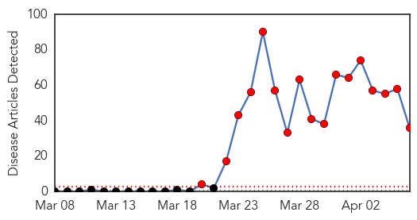
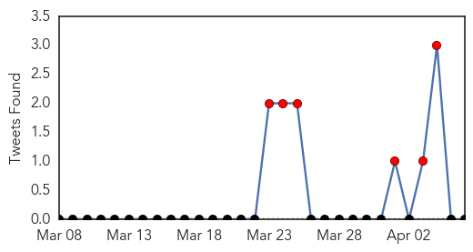
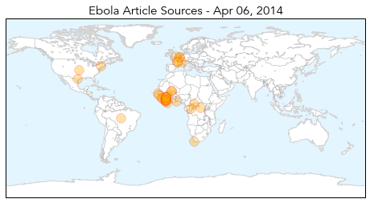
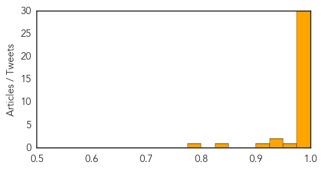

Ebola
30-Day Web Trend
17 alerts, 0 warnings

30-Day Twitter Trend
10 alerts, 0 warnings

Article Locations
Article Confidences
Top Articles:
- 1.000
- Ebola Treatment Center In Guinea – Attacked
- 1.000
- As Ebola spreads in Africa, how worried should West be?
- 1.000
- Mali government notifies WHO of four suspected Ebola cases
- 1.000
- Mob Attacks Ebola Virus Treatment Center in Guinea, Health Officials Issue Shutdown
- 1.000
- the edge of knowledge
- 1.000
- As Ebola spreads in Africa, how worried should West be?
- 1.000
- Crowd attacks Ebola treatment center in Guinea
- 1.000
- As Ebola spreads in Africa, how worried should West be?
- 1.000
- Ebola-hit Guinea calls for calm after attack on aid group
- 1.000
- West Africa gears up to fight Ebola
- 1.000
- South Africa on alert against Ebola - Xinhua
- 1.000
- UN agency urges vigilance amid Ebola outbreak in Guinea, Sierra Leone and Liberia
- 1.000
- Liberian health authorities confirm two cases of Ebola -WHO
- 0.999
- Mob attacks Ebola treatment centre in Guinea, suspected cases reach Mali
- 0.999
- Kenya : Senegal shuts land border with Guinea to prevent Ebola spreading
- 0.999
- Salt Lake City News, Sports, Archive
- 0.999
- Crowd attacks Ebola treatment center Republican American
- 0.999
- 4 tips vs Ebola spread in West Africa
- 0.999
- Crowd attacks Ebola treatment center in Guinea
- 0.999
- Mob attacks Ebola treatment centre in Guinea, suspected cases reach Mali
- 0.998
- Ebola Outbreak Could Become An 'Unprecedented Epidemic'
- 0.998
- Guinea Facing 'Unprecedented Epidemic'
- 0.997
- Ghana testing blood samples of suspected Ebola case, says official
- 0.996
- Suspected Ebola case investigated in Ghana
- 0.996
- Mali reports three suspected cases of Ebola
- 0.995
- Airport passengers screened for Ebola in Guinea
- 0.992
- Mob Attacks Ebola Treatment Site in Guinea
- 0.990
- UPDATE 1-Ghana testing blood samples of suspected Ebola case -official
- 0.983
- KATH investigates suspected Ebola case
- 0.983
- Guinea: Mining firms in lockdown as Ebola death tolls climbs
- 0.972
- First suspected case of Ebola disease recorded at KATH
- 0.949
- Ghana testing blood samples of suspected Ebola case -official
- 0.929
- Samaritan's Purse Is Working with the Government in Liberia to Help Contain the Spread of the Virus - Crossmap Christian News
- 0.905
- Health Highlights
- 0.841
- Page not found
- 0.792
- Ebola Epidemic Effecting Economy In Liberia
Top Tweets:
-
No tweets found for Apr 06, 2014
Measles
30-Day Web Trend
0 alerts, 1 warnings

30-Day Twitter Trend
0 alerts, 0 warnings

Article Locations

Article Confidences

Top Articles:
- 0.967
- Brampton infant tests positive for measles - Toronto
- 0.945
- UC Berkeley student in isolation with measles, second reported case of measles at the university
- 0.936
- A case of measles is confirmed in Springfield
- 0.896
- Experts decode germs’ DNA to fight food poisoning - National
- 0.890
- Health ministry urges measles vaccinations for children
- 0.882
- Washington Woman Exposes Thousands of Fans of Kings of Leon to Measles
- 0.873
- In America, vaccine denial goes mainstream
- 0.859
- UC Berkeley providing vaccinations after second student diagnosed with measles
- 0.820
- 2nd UC Berkeley student infected with measles 'could have exposed thousands'
- 0.820
- Second measles case confirmed at UC Berkeley
- 0.816
- Another U.C. Berkeley Student Diagnosed with Measles. Category
- 0.805
- Anti-vaccine movement is giving diseases a 2nd life
- 0.640
- Among US upper middle class, vaccine denial goes mainstream
- 0.633
- Measles On Canadian Flight Prompts Health Warning
- 0.623
- More talk needed: Call for comprehensive discussion on vaccines
- 0.558
- Infant from Abu Dhabi brings measles threat to Brampton
- 0.516
- Student Infected With Measles Kept In Isolation At UC Berkeley University
Top Tweets:
-
No tweets found for Apr 06, 2014